Our mission
Advance and promote computing and information technology education and practice for the benefit of all.

A professional home for the people shaping Nigeria’s information technology ecosystem.
The Nigeria Computer Society is the umbrella organisation for information technology professionals, interest groups and stakeholders in Nigeria. It was established in 1978 as the Computer Association of Nigeria (COAN) and became NCS in 2002.
The Abuja Chapter connects that national mission with professionals, public institutions, businesses, academia and innovators in the Federal Capital Territory, where much of Nigeria’s digital policy is shaped.

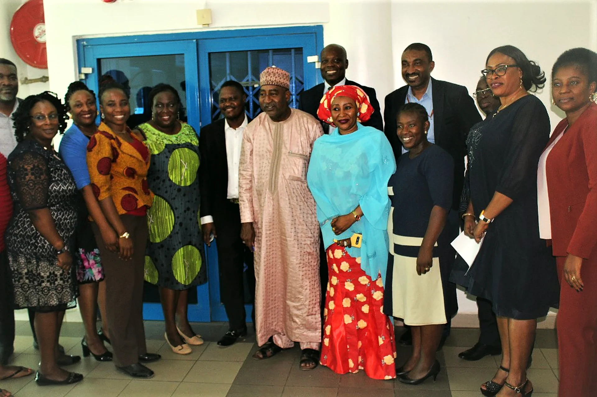
Founded as the Computer Association of Nigeria (COAN).
Becomes the Nigeria Computer Society, the umbrella body for IT in Nigeria.
The Abuja Chapter publishes annual programmes for members and partners.
Partnership visits to NDPC, NIMC, PTDF and the Police ICT Department.

Advance and promote computing and information technology education and practice for the benefit of all.
Advancement of information technology science and practice, and their use as solutions and business enablers across every industry and human endeavour.
The aims the Society pursues on behalf of its members and the nation.

Promote the education and training of computer and information scientists, engineers, architects and IT professionals.
Encourage research in computer and information science and share results across industry, the military and education.
Promote the exchange of information on information processing and management among specialists and the public.
Develop members’ competence and uphold the Society’s Code of Conduct and Code of Practice.
Advise governments, authorities and the public on national and international policy affecting computing and IT.
Contribute to policy and to the development and assessment of education and training curricula for the profession.
An elected executive committee leads the chapter’s programmes, partnerships and member services.
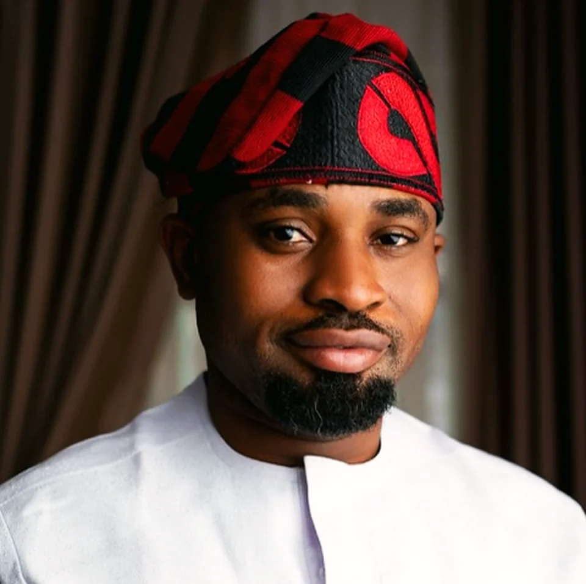
Chapter Chairman
Chartered technology professional, policy and innovation advocate, and ecosystem builder connecting young people, startups, government and industry.
Founder of Young Innovators of Nigeria (YIN), former Director of Innovation and Strategy at NCS Abuja (2023 to 2025), and a Member of the Computer Professionals (Registration) Council of Nigeria (CPN).
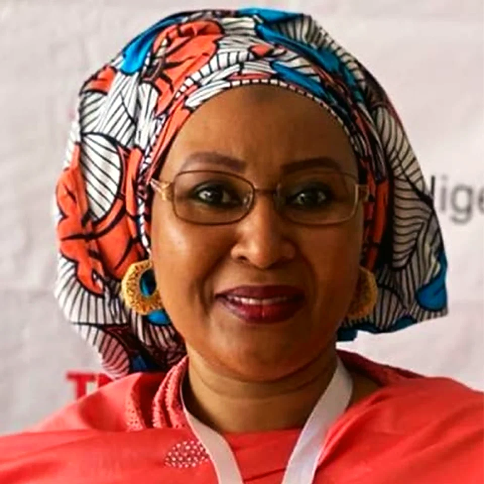
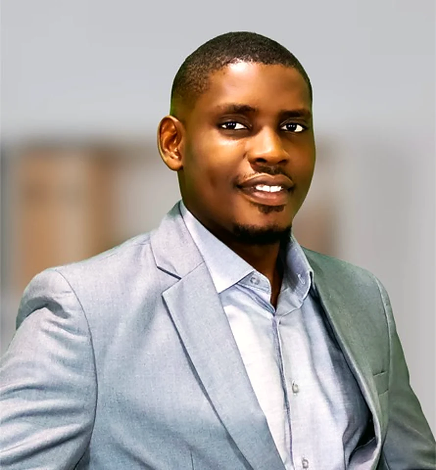
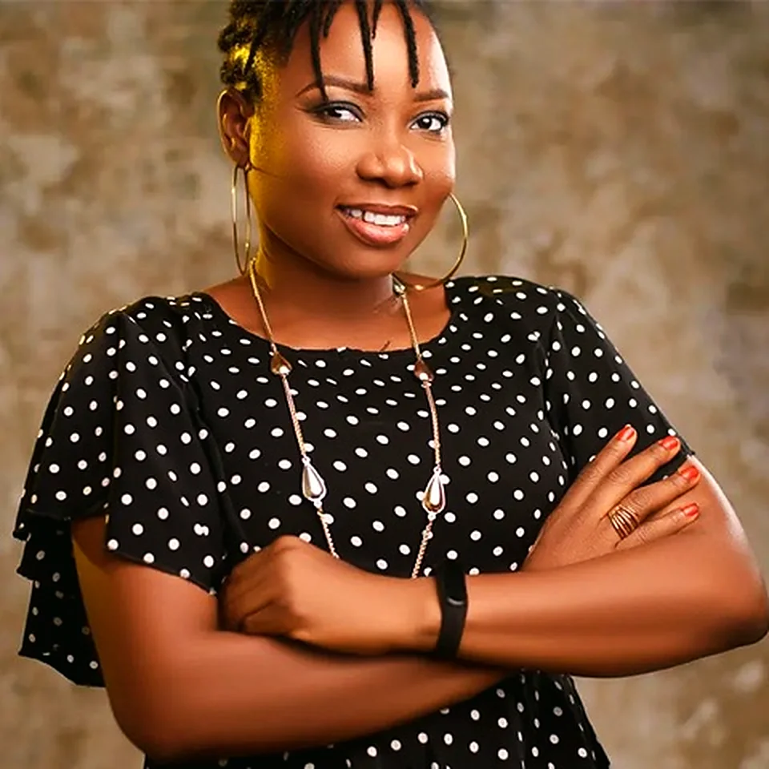
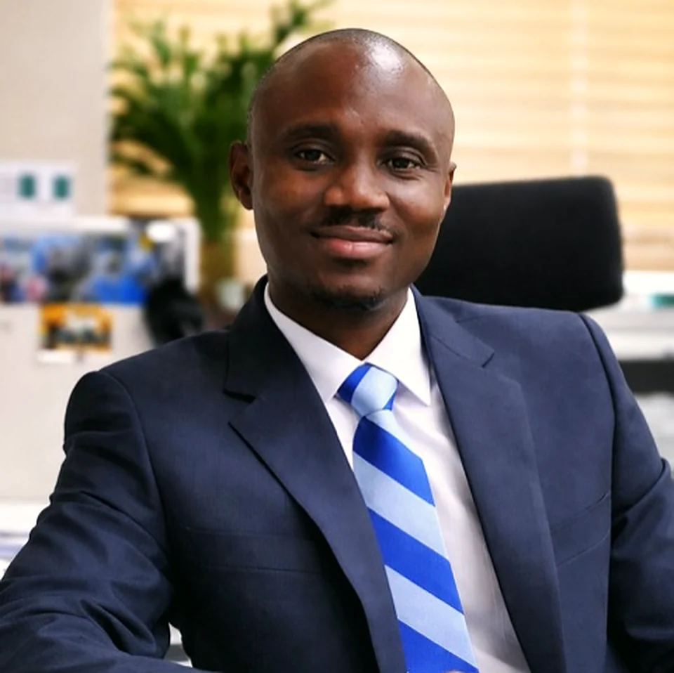
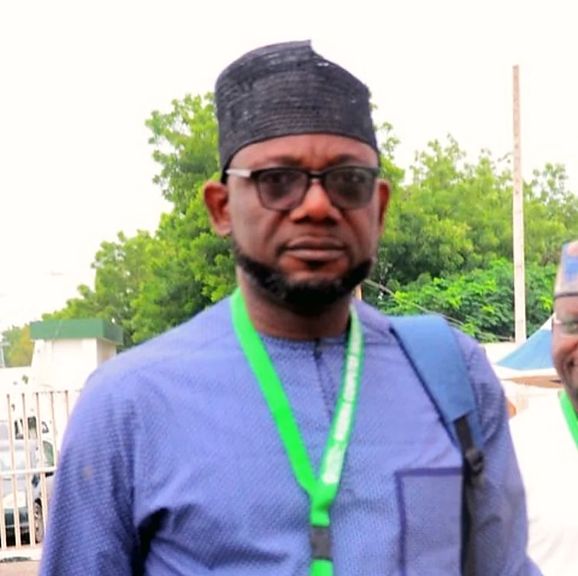
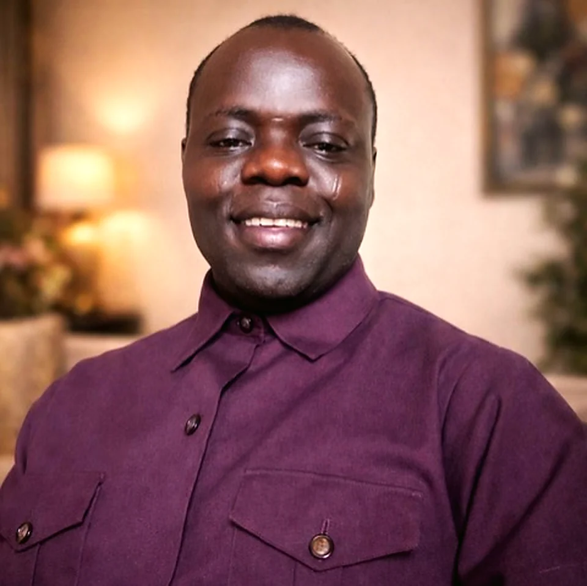
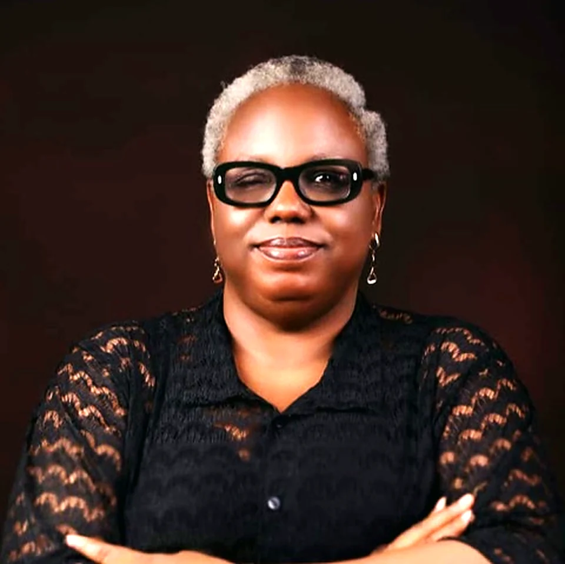
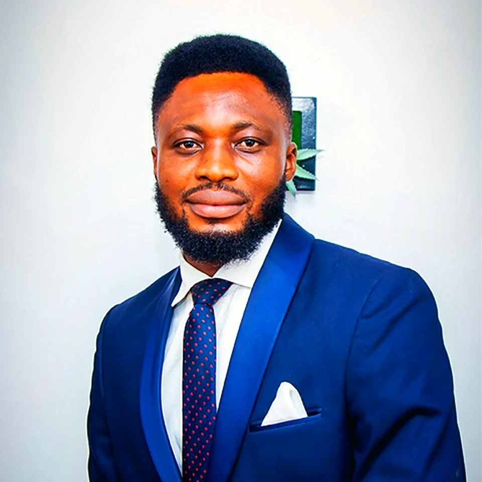
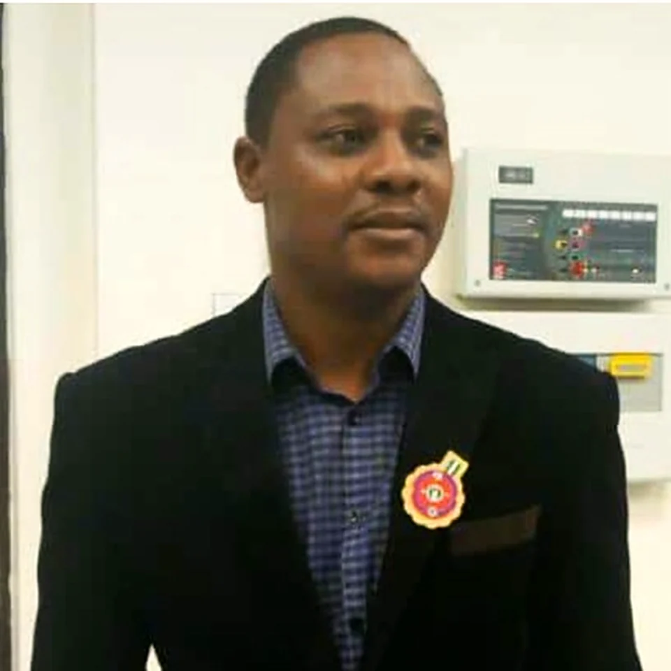